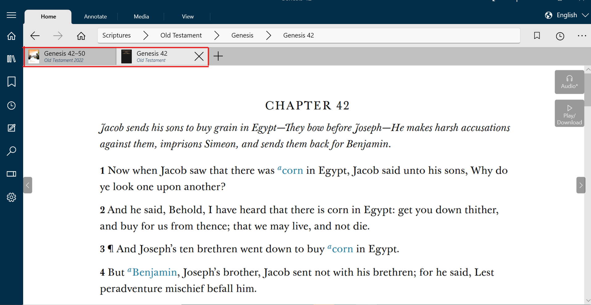
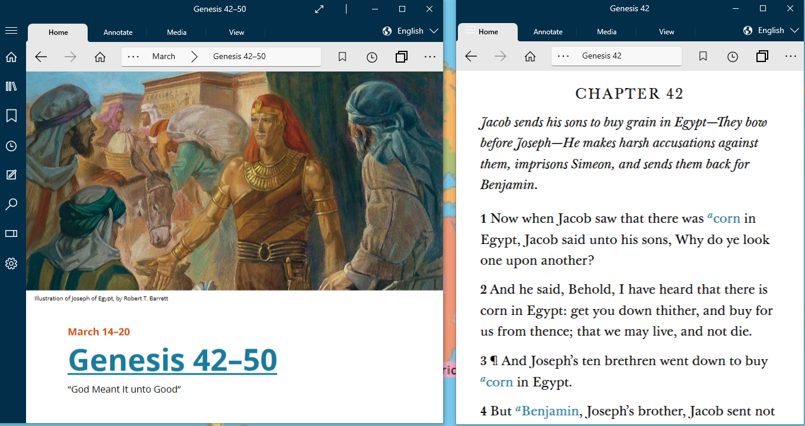

How Do I Use Tabs and Windows - Silent Video
How Do I Use Tabs and Windows - Silent Video How Do I Use Tabs and Windows - Silent Video
GLW uses tabs and windows to facilitate study of multiple books.
Using tabs you can open multiple books at the same time. You can navigate in one tab while preserving the information in the other tabs. Each tab represents a different book. Many tabs may be created but only one can be viewed at a time.
Another method for viewing multiple screens is Using multiple windows. Windows fhas the same capabilities as tabs, but Windows allows you to view the screens simultaneously.
One example of how multiple tabs and Windows can be helpful is illustrated by an example from the Come Follow Me manual.
In the first illustration below, the first tab is a lesson in the Come Follow Me manual and the second tab is a scripture referenced in the lesson. The tabs are shown in the red box.
The second illustration shows the same books in separate windows.
If you want to open a new screen while preserving your current screen you can use tabs.
To open your first new tab, press the New tab button on the home ribbon ( ) or open the more menu (
) or open the more menu ( ) in the home ribbon and press New tab. The Tab Bar will open showing the original location on the left and a second tab which will open the Home screen. From there you can navigate to any location you wish.
) in the home ribbon and press New tab. The Tab Bar will open showing the original location on the left and a second tab which will open the Home screen. From there you can navigate to any location you wish.
To open additional tabs, you can click on the New Tab button on the right of the Tabs Bar () to open another tab.
To open a new tab using the keyboard, press Ctrl + T. To close an open tab, click the X on the tab's right side in the tab bar. You can also close the current tab by using the Ctrl + W keyboard shortcut.
Duplicating tabs is helpful when you want to open a link without losing the original location.
You can duplicate an existing tab by right-clicking (or pressing and holding) on the tab you want to duplicate. Then select "Duplicate Tab." The duplicated tab will open on the Tab Bar.
You can also duplicate a tab using the keyboard shortcut, Ctrl + K.
Using windows you can view multiple screens simultaneously. Open a new window for each selection you want to access.
To open a new window, open the more menu () in the home ribbon and press New window.
You can view, resize, rearrange, and close Gospel Library windows as you would any other window in Windows operating system.
You can open an existing tab in a new window. Right-click or press and hold on the tab and selecting "Open in new window." You can also do this using the keyboard shortcut, Ctrl + Shift + N. This is helpful when you want to connect to links in a document without losing the original location.
Although not necessary to use tabs or windows, keyboard shortcuts can make your study of gospel content in Gospel Library quicker and easier. Below is a list of keyboard shortcuts you can use to access various tab and window features.
| Shortcut | Action |
| Ctrl + T | Open a new tab |
| Ctrl + W | Close the current tab |
| Ctrl + Shift + T | Reopen closed tab |
| Ctrl + K | Duplicate tab |
| Ctrl + 1–9 | Jump to tab 1–9. |
| Ctrl + Tab | Switch to next tab |
| Ctrl + Shift + Tab | Switch to previous tab. |
| Ctrl + N | Open a new window |
| Ctrl + Shift + N | Open current tab in a new window |
| Alt + D | Move cursor to omnibox of active window |
| Ctrl + L |